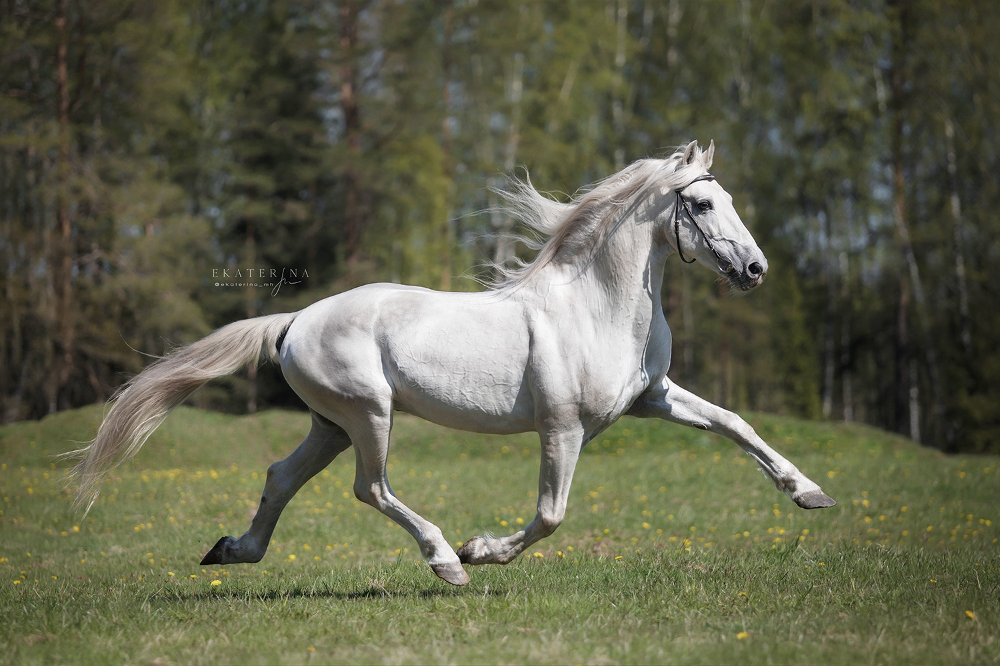
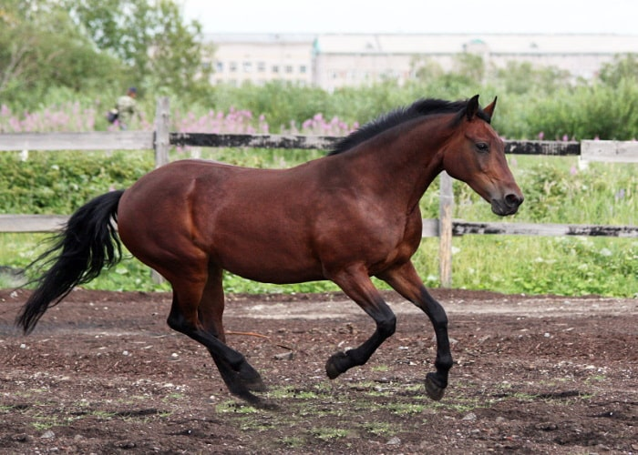
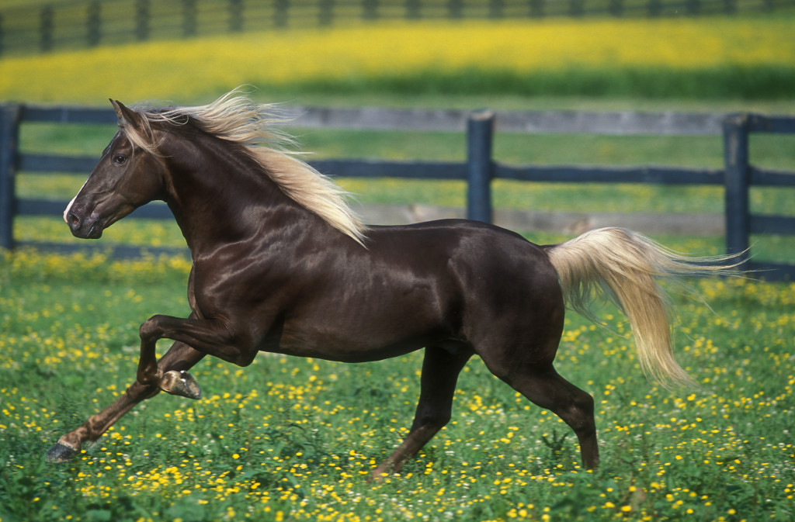
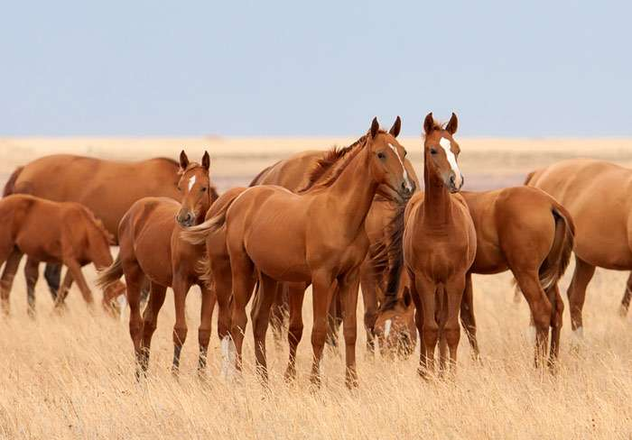
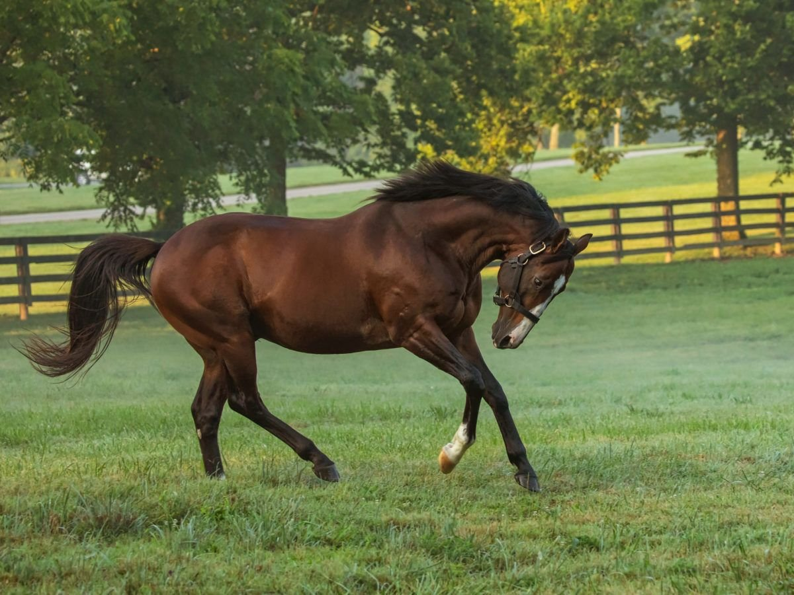

Это страница про лошадь
Домашняя лошадь — животное из семейства лошадиных отряда непарнокопытных, одомашненный потомок дикой лошади. Используется человеком вплоть до настоящего времени. Наука о лошадях — иппология. Лошади в широком смысле слова — единственный ныне живущий род семейства лошадиных отряда непарнокопытных. Наиболее характерную особенность лошадиных составляют ноги, имеющие только один вполне развитый и одетый копытом палец. Череп вытянут и отличается относительно длинной лицевой частью. Долгое время лошади были в числе экономически наиболее важных для человека домашних животных, однако их важность упала в связи с развитием механизации. В природе лошадь — житель больших, открытых пространств степей или прерий, спасающаяся в случае опасности при помощи бегства.
- Орловская рысистая
Орловская рысистая — знаменитая русская порода легкоупряжных лошадей с наследственно закреплённой способностью к резвой рыси. Выведена в России, на Хреновском конном заводе в Воронежской губернии под руководством его владельца графа А. Г. Орлова во второй половине XVIII — начале XIX веков методом сложного воспроизводительного скрещивания с использованием арабской, датской, голландской, мекленбургской и других пород. В 2016 году породе исполнилось 240 лет. Основная сфера использования орловского рысака сегодня это рысистый спорт (бега на ипподромах). Также используется в качестве улучшателя массового коневодства, до сих пор применяется населением России в разных регионах страны на различных работах. Нашёл своё применение и в конной полиции. Благодаря красоте своего экстерьера, силе и выносливости, высокой генетической ценности орловцы пользуются неизменной популярностью на международных аукционах лошадей. Орловские рысаки используются также в драйвинге; в конно-спортивных клубах России популярны как прогулочные лошади.

- Русская рысистая
Русский рысак – это легкоупряжная порода лошадей, выведенная в начале XX века в России при помощи скрещивания Орловского рысака с Американским рысаком. В качестве самостоятельной породы была утверждена в 1949 году. Русский рысак более резвый и быстрый, по сравнению с Орловским рысаком. Основное предназначение – конный спорт. На сегодня русская рысистая порода – наиболее многочисленная из заводских пород в России. Рост в холке 154-165 см. Русский рысак – красивая и выносливая лошадь. Голова отменно сложена, имеет прямой профиль, выступающие ганаши, широкий лоб, выразительные темные глаза и подвижные длинные уши. Шея пропорциональная, средней длины. Прямая и длинная спинопоясничная линия, выступающая холка. Покатый, широкий, несколько удлиненный круп. Грудь развернутая, спина выпуклая и длинная.Молодые особи русской рысистой породы достаточно скороспелы. К возрасту 4 лет они, как правило, заканчивают свой рост. Но максимальную резвость развивают только к 5-6 годам, а в отдельных случаях – и позже.

- Роки Маунтин "Лошадь Скалистых гор"
Лошадь Скалистых гор — порода верховых лошадей, выведенная в США на востоке штата Кентукки. Эта порода обладает небольшим поголовьем примерно в 3000 лошадей. Родиной этой породы на самом деле являются не Скалистые горы, а Аппалачи. Основателем породы является живший в конце XIX века жеребец, попавший на восток штата Кентукки откуда-то из-за Скалистых гор. Происхождение этого жеребца остаётся неизвестным. Его потомком стал жеребец игреневой масти Олд Тоуб, рожденный в 1927 году на ферме, где предоставлялись услуги, связанные с горным туризмом в национальном парке Нейчерал Бридж. Олд Тоуб отличался выносливостью, хорошими ногами, покладистым характером и удобными для всадника аллюрами. Он дожил до 37 лет, передавая свои качества потомству. Родословные подавляющего большинства современных лошадей Скалистых гор восходят к Олд Тоубу. Его потомки быстро стали популярными среди фермеров штата Кентукки. Этих лошадей использовали не только для верховой езды, но и на сельхозработах. Название породы — лошадь Скалистых гор — закрепилось за ними с лёгкой руки Сэма Таттла, владельца Олд Тоуба.

- Донская "Дончак"
Донская порода лошадей – одна из старейших отечественных пород, выведенная в XVIII-XIX веках донскими казаками на территории современной Ростовской области. Крупные верхово-упряжные донские лошади очень выносливы и неприхотливы в содержании и кормлении. Они значительно уступают в скорости представителям верховых пород, разводимых специально для скачек, но могут преодолевать длительные дистанции. За сутки донская лошадь может пройти до 300 километров. Лошади донской породы имеют спокойный, нерезкий характер. Отлично подходят для детей. Нередко донских лошадей используют для обучения верховой езде.
История донской породы лошадей неразрывно связана с историей самого Дона и историей казачества. Конные заводы на Дону появились в далеком XVIII веке. Первые донские лошади были ловкими и гибкими, прыгали через естественные препятствия, могли выполнять крутые повороты, были выносливыми и нетребовательными к уходу, корму. В полной мере отвечали требованиям к строевой лошади и при хорошем уходе жили не менее 20 лет. В настоящее время донская порода лошадей находится под угрозой вымирания. Поголовье донских лошадей сокращается с каждым годом. Так, в 2012 году в самом большом хозяйстве Ростовской области, разводящем донских лошадей, было выведено всего 20 чистокровных представителей донской породы. В последние годы ряд конных заводов были признаны банкротами и преобразованы в различные АОО, ООО и др. Судьба ценнейшего поголовья лошадей оказалась в руках людей, абсолютно не заинтересованных в развитии породы, имеющим любительское отношение к коневодству. Руководители Федерального агентства по сельскому хозяйству ничего не предпринимают для решения проблем коннозаводства. Существующие сегодня хозяйства держатся, преимущественно, за счет энтузиазма местных специалистов. Но именно сейчас для донской породы лошадей определилось главное: она нашла свое место в конном спорте, любительской верховой езде. При такой ясности в плане стратегического развития породы, задачи тактического плана могут решаться в зависимости от текущих условий. Нам остается надеяться, что донская порода лошадей будет продолжать свое существование и развитие еще много лет.

- Чистокровная верховая
Чистокровная верховая лошадь (Thoroughbred) – порода, выведенная в Англии. Изначально этих лошадей называли английскими скаковыми, но в связи с тем, что их начали разводить в большинстве стран мира, было принято решение об изменении названия породы. Представители данной породы – самые быстрые лошади в мире. На коротких и средних дистанциях они развивают скорость более 60 км/ч, а на длинных дистанциях (более 3 км) – 55 км/ч. Лошади других пород не принимают участие в скачках вместе с чистокровными верховыми – у них нет ни единого шанса занять достойное место, т.к. скорость бега несоизмерима. Рекордсмен по скорости среди чистокровных верховых – жеребец Бич Рэкиту, который развил скорость 69,69 км/ч на дистанции в 409,26 м. Чистокровные верховые лошади имеют энергичный, живой, холерический темперамент. Они отличаются высокой скоростью реакции и максимальной отдачей сил. Отлично подходят для участия в скачках.
Великобритания, еще со времен Юлия Цезаря была знаменита своими подвижными и крепкими скакунами. Но с появлением огнестрельного оружия в сражениях на первые места вышла скорость, выносливость и маневренность. А массивные лошади того времени не удовлетворяли данным требованиям, что подтолкнуло английских коневодов к созданию новой, быстрой и маневренной породы.Чистокровные верховые лошади появились в XVII – XVIII веках в Англии. Их прародители – лошади Востока. Селекция производилась по методу жесткого отбора по итогам скачек. Англичане называют чистокровных верховых «выведенными в совершенстве».

Видео с лошадьми
Ржание лошади
Конный клуб "Белая Русь"